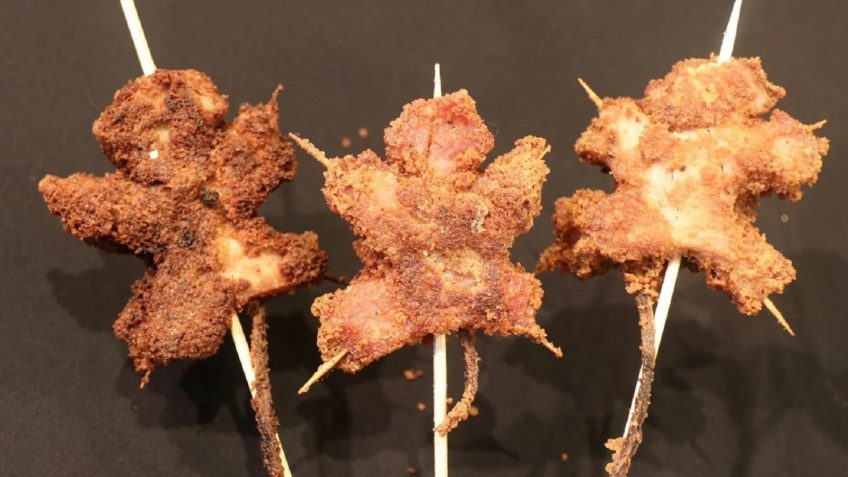

Fried Rats on a Stick

A recipe handed down through generations
Invented by my great great great great great great great great great great great great
great great great great great great great great grandfather during the Black Death
Ingredients
- Vegetable oil, for frying(about 5 cups)
- 2 cups all-purpose flour
- 1/4 cup cornmeal
- 2 tablespoons cornstarch
- 1 teaspoon ground dried thyme
- Kosher salt and freshly ground pepper
- 4 large eggs
- 1/4 cup milk
- 3 adult rats(about 1 pound each)
- 3 kebab sticks
Instructions
- Fill a large cast-iron skillet with 1 inch of vegetable oil. Heat over medium heat until a deep-fry thermometer
registers 350 degrees F.
- Meanwhile, whisk the flour, cornmeal, cornstarch, thyme, 1 tablespoon salt and 2 teaspoons
pepper in a large bowl. Whisk the eggs and milk in another large bowl. Season the rats
all over with salt and pepper. Dredge each rat in the flour mixture, then dip in the egg mixture,
letting any excess drip off. Return the rats to the flour mixture and turn until well coated.
Transfer to a large plate or baking sheet.
- Carefully add one rat to the hot oil. The oil temperature will drop; adjust the heat as needed
to maintain a temperature of 350 degrees F. Fry the rat, without turning, until the crust
starts browning, about 2 minutes. Flip the rat and continue cooking, turning occasionally,
until browned and crisp all over and a thermometer inserted into the midsection registers
160 degrees F, 13 to 16 minutes. Remove with tongs and transfer to a rack set on a baking sheet;
sprinkle with salt. Let the oil temperature return to 350 degrees F before repeating with the remaining rats.
- Insert kebab stick up the anus of each rat.
Return to main page